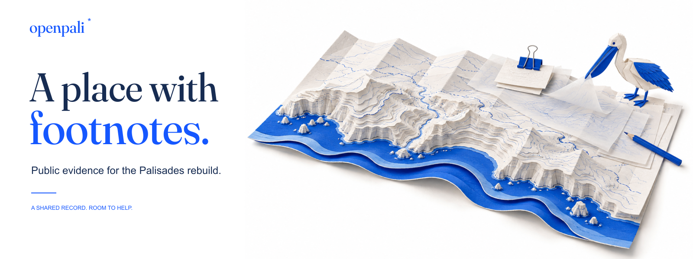
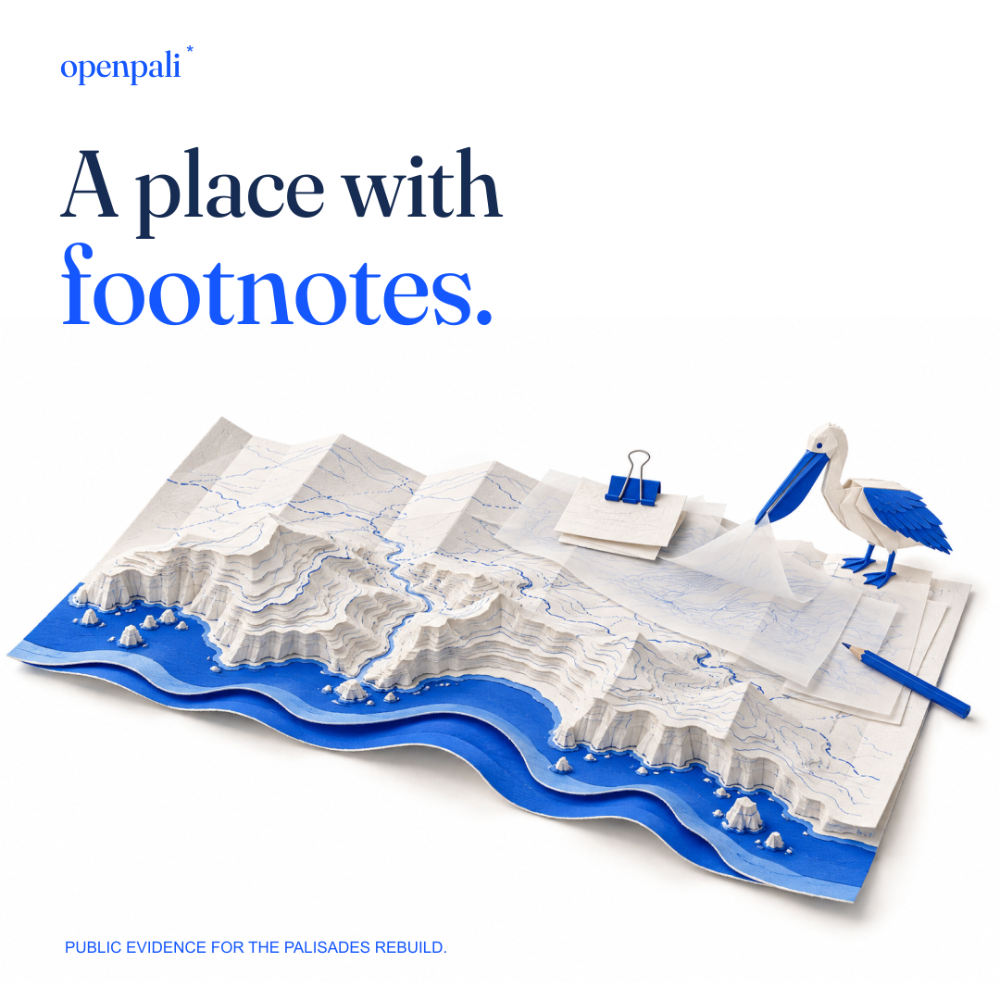
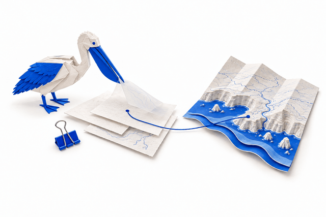
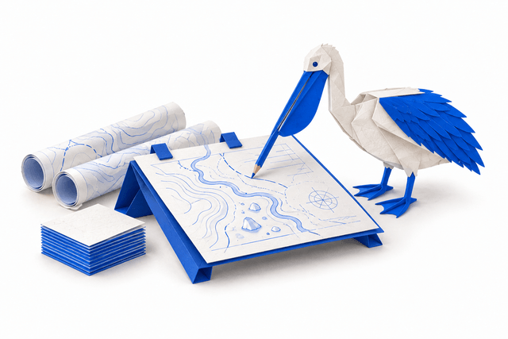
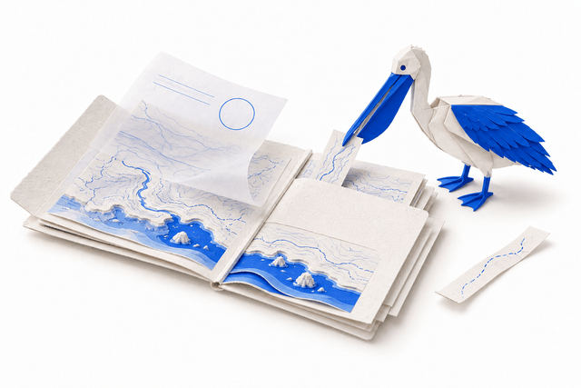

A DESIGN REVIEW
A place with character.
One world, carried through the project.
Explore the live pages
and the identity they share.
Production candidate. A coastal paper world, a small field guide, and one invitation to GitHub.
1440 × 1000THE FIELD OFFICE, OUT IN THE WORLD
A shared visual language.
Actual project assets.
Same place. Different formats.


WAYS TO TAKE PARTThree illustrations for the contributor journey.


